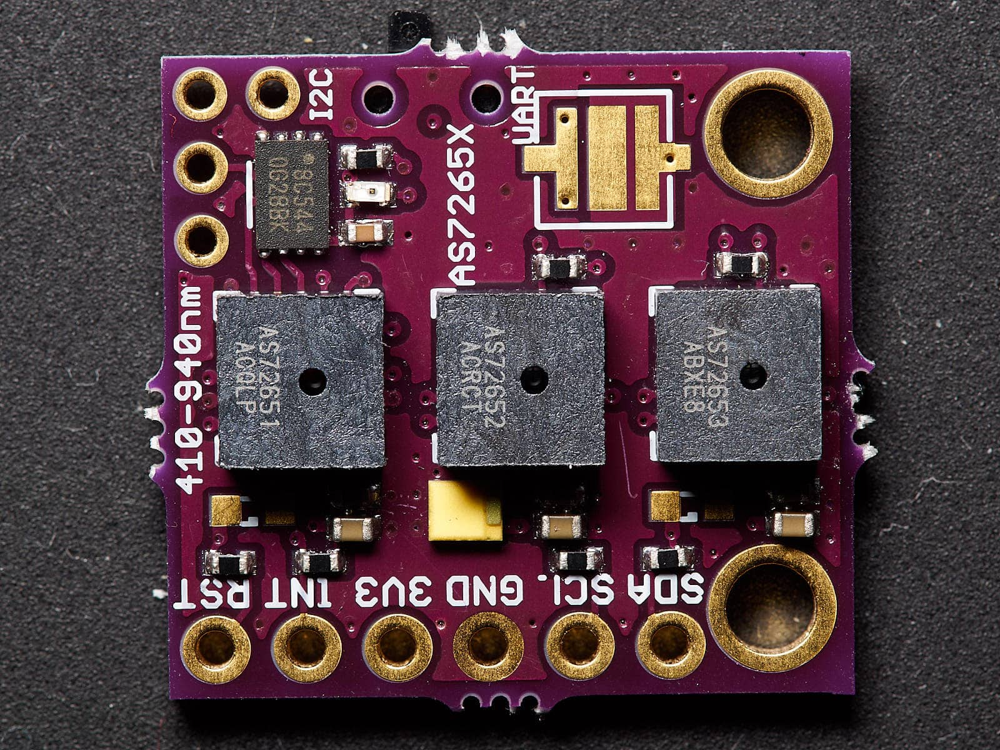
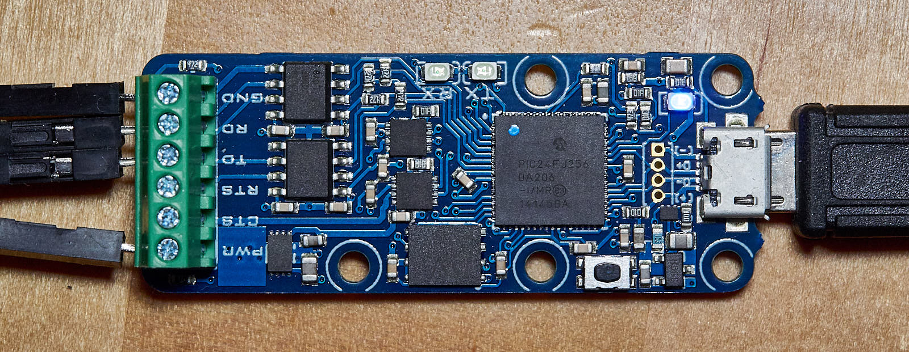
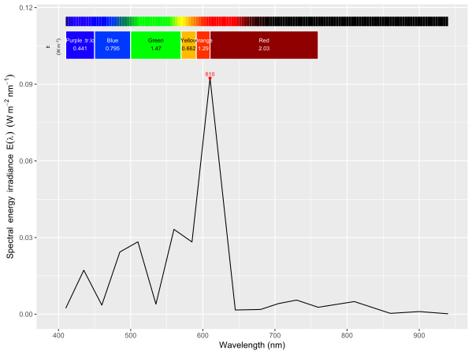

# Example of use of Yoctopuce Python libraries from R
# Spectrometer AS7265X from ams, conneted using UART interface to a YoctoSerial
# USB module.
#
# Nominal wavelengths (nm), calibrated values could replace these.
# Letters correspond to names used in the data sheet.
wavelengths_AS7265X <- c(A = 410, B = 435, C = 460, D = 485, E = 510, F = 535,
G = 560, H = 585, R = 610, I = 645, S = 680, J = 705,
T = 730, U = 760, V = 810, W = 860, K = 900, L = 940)
# Spectrum is returned with wavelengths unsorted, we
w.length <- wavelengths_AS7265X[c("R", "S", "T", "U", "V", "W", "G", "H",
"I", "J", "K", "L", "A", "B", "C", "D",
"E", "F")]
# Remove value names
w.length <- as.numeric(w.length)
# Create vector of indeces to sort the spectral data by increasing wavelength
w.length.order <- order(w.length)
library(stringr)
library(ggspectra)
library(photobiologyPlants)
library(photobiologyWavebands)
library(reticulate)
# In Windows use "pip install yoctopuce" directly in Python in r-reticulate env
# as the line below will search Anaconda but not https://pypi.org/project/yoctopuce/
# in all other OSs the command below should work.
# py_install("yoctopuce")
if (!(py_module_available("yoctopuce.yocto_api") &&
py_module_available("yoctopuce.yocto_serialport"))) {
stop("Required 'yoctopuce' Python module not installed. Aborting!")
# not run, but can be useful for searching where 'yoctopuce' library modules
# are installed
py_discover_config(required_module = "yoctopuce.yocto_api",
use_environment = "r-reticulate") # optional
}
yocto_api <- import("yoctopuce.yocto_api")
yocto_serialport <- import("yoctopuce.yocto_serialport")
# Setup the API to use local or remote USB devices. You can use an IP address or
# URL if the YoctoHub or the computer where the virtual hub is running is
# connected to a network and "localhost" for a virtual hub running locally (in
# all cases specifying the port). The setup the API for modules locally
# connected to an USB port, use 'usb' as address.
errmsg <- yocto_api$YRefParam()
if (yocto_api$YAPI$RegisterHub("localhost:4444", errmsg) !=
yocto_api$YAPI$SUCCESS) {
stop("Init error ", errmsg$value)
}
# display API version
yocto_api$YAPI$GetAPIVersion()
serialPort <- yocto_serialport$YSerialPort$FirstSerialPort()
if (is.null(serialPort)) {
stop('No module connected (check cable)')
}
serialPort$describe()
serialPort$set_serialMode("115200,8N1")
serialPort$set_protocol("Line")
serialPort$set_voltageLevel(serialPort$VOLTAGELEVEL_TTL3V)
serialPort$clearCache()
# set integration time 1-255 (* 2.8 ms)
serialPort$queryLine("ATINTTIME=100", 5)
# set amplifier gain 0-3 (1x, 3.7x, 16x, 64x)
serialPort$queryLine("ATGAIN=2", 5)
# endless loop
cat("\f") # ^L form feed clears the console
repeat {
# request calibrated data
char.spct.data <- serialPort$queryLine("ATCDATA", 100) # wait at most 100ms for result
# split text string and convert to numeric
words <- str_split(char.spct.data, boundary("word"), simplify = TRUE)
if (words[19] != "OK") {
cat("Bad data")
}
numeric.spct.data <- as.numeric(words[1:18])
# convert units and apply callibration
numeric.spct.data <- numeric.spct.data * 1e-5 * 11.3 / 18 # uW cm-2 -> W m-2
# as results are not returned in wevelength order we need to reorder them
my.spct <- source_spct(w.length = w.length[w.length.order],
s.e.irrad = numeric.spct.data[w.length.order])
# summaries
q_ratios.tb <-
q_ratio(my.spct,
list(Blue("Sellaro"), Red("Smith20")),
list(Green("Sellaro"), Far_red("Smith20"))) %>%
enframe()
print(q_ratios.tb)
# plot
print(autoplot(my.spct,
w.band = VIS_bands()))
yocto_api$YAPI$Sleep(5000L) # wait 5 s freeing the CPU
cat("\f") # ^L form feed clears the console
dev.off(dev.list()["RStudioGD"]) # Clear plots
gc() # memory, garbage collection
}
In the introduction to this series of posts, I described the Yoctopuce library and told that R package ‘reticulate’ can be used to access the Python version of the yoctopuce library. Here I describe a simple and cheap “micro” spectrometer with a digital interface and its use together with R packages from the 'r4photobiology' suite.
I will use a miniature and low cost spectrometer, type AS7265X from ams. It does not used a grating as monochromator, but instead each of the 18 channels has a different interference filter deposited directly on the silicon chip. The FWHM is 20 nm, and the wavelength range from 410 nm to 940 nm. The spectrometer consists in three separate sensor units working together. The interface is digital, and temperature compensation and analogue to digital conversion takes place in the sensor modules. In spite of the number of channels communication between the spectrometer and a micro-processor requires only two wires. The spectrometer supports two different communication protocols, the specialized I2C and a generic serial communication (UART).
A macro-photograph of the top of an early prototype of a breakout board is shown below. The size of the board is 18 mm × 19 mm. The switch on the upper edge or an equivalent solder bridge in newer board should be used to select the UART interface.

I bought this board from a seller at Tindie for USD 50. The seller is now selling a differently shaped board, with the three modules in a triangle, and so closer to each other. A similar board is offered by Sparkfun for USD 65. Furthermore, if 6 wavelength channels are enough for an application, there are available two modules similar to those in this “triad” that can be used on their own, using the same communication protocols. Sparkfun also makes breakout boards for these modules, for VIS (AS7262) and NIR (AS7263) ranges, which sell for 26 USD each.
To connect it I am using a YoctoSerial module as it allows remote access to the attached device, in this case the spectrometer. It also provides regulated power to drive the spectrometer. On the right is a Micro-USB connector and on the left two wires for power (PWR to 3V3) and ground (GND to GND), and the transmit (TD to SCL) and receive (RD to SDA) lines for serial communication.

The listing at the end of the post shows an R script that measures the spectrum, and plots and summarises the data. Acquisition rate is approximately 10 spectra per minute in an infinite loop. One measurement for a desktop LED lamp is shown here.
